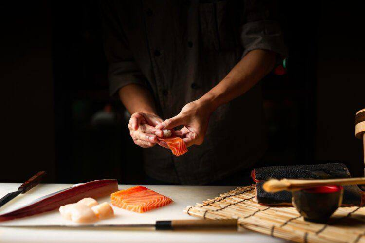

OUR COMMITMENT
Cleanliness You Can See
We believe great Japanese cuisine begins with a clean workspace, fresh ingredients, and careful preparation. Our open-kitchen concept lets guests see the attention and care behind every dish.


At ShinKanZen Sushi, we believe that Japanese cuisine is more than just food. It is an expression of tradition, creativity, and care. From selecting fresh ingredients to preparing every dish with attention to detail, we aim to create a memorable experience for every guest.
OUR COMMITMENT
We believe great Japanese cuisine begins with a clean workspace, fresh ingredients, and careful preparation. Our open-kitchen concept lets guests see the attention and care behind every dish.